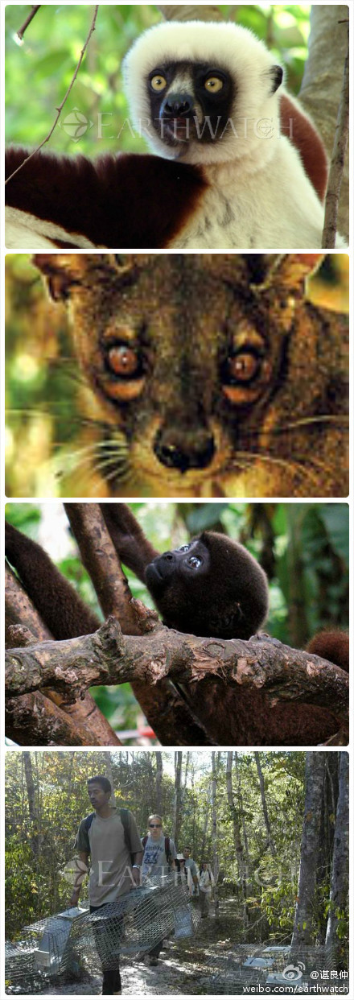

听过@谌良仲 的演讲，对这种活动流口水中。与其花几万送孩子假期出国转一圈，不如参加这种活动，而且与你同行的是素质很好，来自全球各地的志愿者。@谌良仲:地球观察“马达加斯加的食肉动物”野外科学考察项目志愿者招募中！2012年12月27日到2013年1月8日科考，诚邀大家报名参加。想想那些神奇的猴面包树，印度洋岛国那些独特的生物和植物群落！想想都流口水啊！能前往普通旅行者不能到达的地方，同时为环境保护尽点心力并进行宣传，相信这是很多人梦寐以求的 